Astronomy 101
Ch 1 - Science and the Universe: A Brief Tour
The Nature of Astronomy
- Astronomy is the study of objects that lie beyond our planet Earth and the processes by which these objects interact with one another.
- Universe is changing
The Nature of Science
Observational Science
- Objective, evidence-based, reproducible.
- Scientific Method
- Observation: Observe something.
- Question: Ask a question about the observation.
- Hypothesis: Give a possible answer to the question.
- Experiment: Come up with and perform an experiment to find out whether the hypothesis is correct.
- Analysis: Analyze the data of the experiment.
- Conclusion: Formulate a conclusion from the data.
- Repeat!
Geocentric and Heliocentric Model
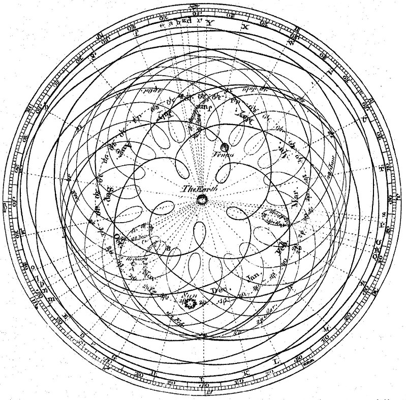

The Laws of Nature
- Scientific Laws or Scientific Theories? Limitations and Evolution of Science.
- Math: The language of science
Numbers in Astronomy
- Scientific Notation (Appendix C)
- SI Units (Appendix D)
- Unit Conversion
- Astronomical Units and Constants
- Speed of light
- Light-year: Measure of the DISTANCE that light travels in one year.
Consequences of Light Travel Time
Light has finite speed!
- Light-year: A natural historical measure!
- AU: Average Earth-Sun distance, approximately 1.5x108 km.
- A history-book of the universe!
A Tour of the Universe
Overview of our Solar System
Overview of Milky Way
- Can't see the rim! Interstellar dust in-plane—some wavelengths invisible to the gas!
The Universe on the Large Scale
Universe, Cosmos, Galaxy, System, etc.
- Capitalized, "Galaxy" refers to Milky Way, uncapitalized to any galaxy
- We are part of a Local Group of over 50 galaxies, which is part of the Virgo Supercluster, with diameter of 110 MLy.
- Solar System < Galaxy < galaxy cluster < supercluster < Universe
The Universe of the Very Small
- Vacuum: On Earth, 1019 atoms/cc, interstellar gas: 1 atom/cc, intergalactic space: 1 atom/m2.
- Cosmically Abundant Elements (Table 1.1) - pattern? Atomic Fusion.
- Discerning atoms with proton number, atomic isotopes, charged atoms.
- Atomic structure: proton, neutron, electron.
- Electron radius is ~105 times the nucleus radius.
- Earth-Sun distance is ~100 times the size of the Sun.
- Matter is mostly empty space!
Four forces
- Gravity, Electromagnetism, Strong and Weak Nuclear Forces.
A Conclusion and a Beginning
- The temporal universe: Cosmic calendar (video?) [42]
Ch 2 - Observing the Sky: The Birth of Astronomy
The Sky Above
Coordinate Systems
- Longitudes and Latitudes
- Relative to celestial sphere (distant stars that make a "sky wallpaper")
- Angles are used to describe the relative sizes of things as we observe them.
Longitudes and Latitudes

Figure 3: Djexplo/Wikimedia Commons
Celestial Sphere
- Right Ascention (R.A., α) and Declination (δ)
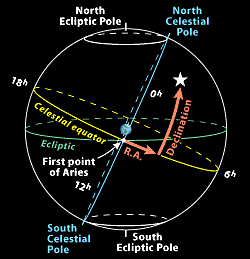
The Celestial Sphere
- If you took everything we can see in space and pretended it was all glued on a sphere, you have the Celestial Sphere (like a planetarium!). Each observer has a zenith extending directly above their head and horizon where the sky meets land, the observer only sees a hemisphere of the Celestial sphere, which is centered about the Earth's center and contains a North and South Celestial Pole, as well as a Celestial Equator extending from the Earth's.
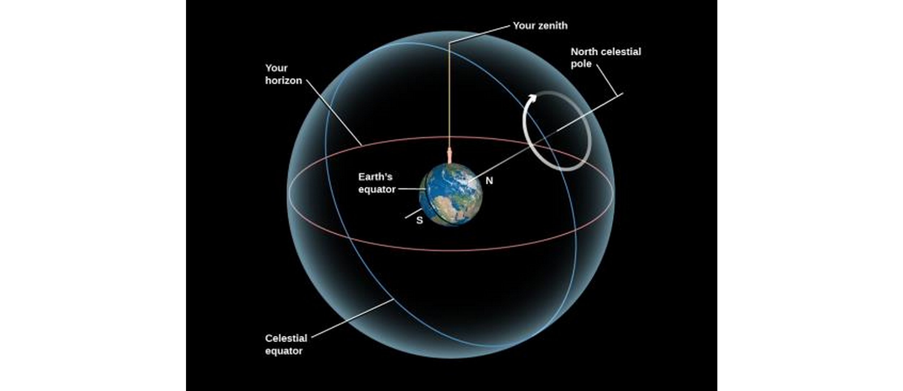
- The earth spins, but the ancients (eg, Early Greeks) didn't know that. They thought the sky spins around the Earth.
- Some stars never set, because they're close enough to the poles not to rotate. These are said to be contained in the North and South circumpolar zones, which are centered about the pole and have radii depending on the observer's position.
- Polaris, the pole star, is close to the earth's North celestial pole.
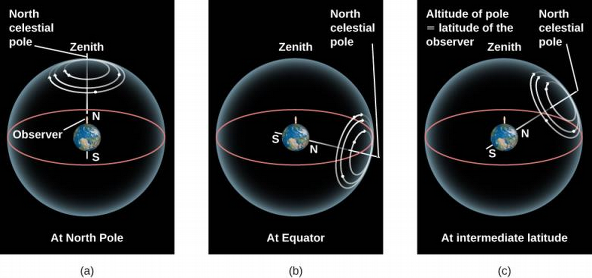
Rising and Setting of the Sun
- Rises in East, sets in West
- Appears to move Eastward relative to stars – how many degrees/day?
- The Ecliptic is the apparent circular path of the Sun as observed from the Earth. The Sun crosses certain perceived star constellations in this path, comprising the zodiac, at different times in the year.
- Compared to the stars, the sun rises 4 minutes later each day due to its motion about ecliptic. (DEMO)
- 23.5o angle between equator and ecliptic.
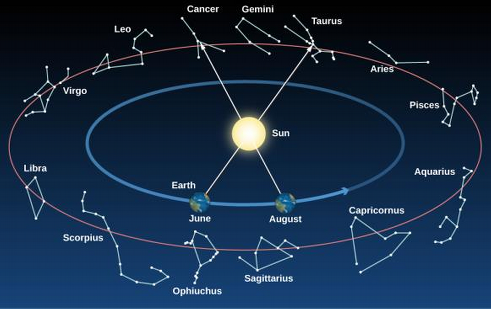
Fixed and Wandering Stars
- Visible planets: Mercury, Venus, Mars, Jupiter, Saturn, Uranus.
- (How do we know about the non-visible planets?)
- CCW rotations of the Sun, its planets, retrograde motion of Venus and Uranus.
Constellations
- Different civilizations came up with different constellations.
- We divide the sky into 88 sectors (constellations are listed in Appendix L)
- Project 1
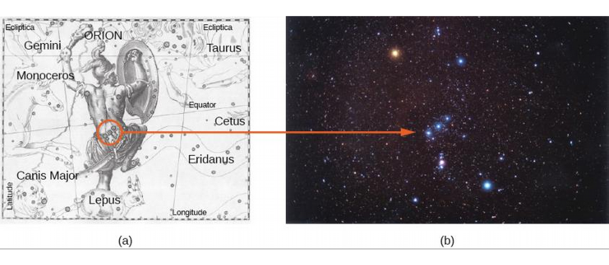
Ancient Astronomy
- Ancient Egyptians, Chinese, Mayans, Polynesians, etc. kept track of stars
- Benefits: Travel, dates and cycles (yearly flooding of the Nile), etc.
Early Greek and Roman Cosmology
- Cosmology is the study of the cosmos, its basic structure and origin.
- Aristotle wrote of the Moon's phases as different portions of the Moon's sunlit hemisphere. Also spoke of the Sun being farther from the Earth and the Moon, due to solar eclipse.
- Solar eclipses occur when the moon blocks out the sun. A lunar eclipse occurs when the Earth blocks the Sun from the Moon, briefly making the moon appear dark red ("blood moon').
- Aristotle found that the circular shadow of the Earth on the moon is evidence of the Earth being round. He also shared as evidence that travellers who go south a significant distance see different stars not visible from the north, and that the North star appears to move towards the horizon during this journey.
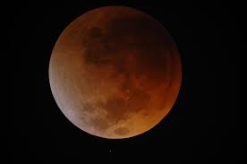
Figure 10: Blood Moon caused by lunar eclipse (NASA)
Evidence the Earth is round
- Before 230 BCE, Greek thinker Aristarchus of Samos suggested the Earth moved around the Sun, but ancient greeks rejected the idea citing the fact that we don't observe the stars from different angles throughout the year. (Why is this?) Furthermore, we do not observe the parallax effect, which can be described in a hunter moving sideways and looking into a forest. He sees the closer trees move left to right faster than the trees further in back, which don't move as much.
Parallax
Parallax exploited in Disney Animation
Further evidence the Earth is round
- Ships disappear under the horizon.
- Images taken by the International Space Station (ISS) and other satellites show the Earth is round.
- Observation of the Sun, stars, and planets.
Measurement of Earth's diameter by Eratosthenes
- The sun's rays reach us at very nearly parallel lines (1.5x108 km away).
- At the same time the sun lit the bottom of a well in Syene, it created a shadow at an angle of 1/50 of a circle 5000 stadia north of it. We don't know which "stadia" is taken as the unit of measure, but his answer is within 20% of the currently known diameter of Earth.

Hipparchus and Precession
- Around 150 BCE, Hipparchus of Nicea (modern-day Turkey) compiled a pioneering star catalog comprising 850 celestial objects. Included information on position and apparent magnitudes, with the brightest stars being first magnitudes, the next brightest second magnitude, etc. still in use today.
- He noticed that the celestial north pole precesses, or rotates around Earth's North pole! In reality, it's Earth that's precessing.
- The cycle of the Earth's precession is 26,000 years. This means that in 14,000 years, the star Vega will become the new North star, replacing Polaris.
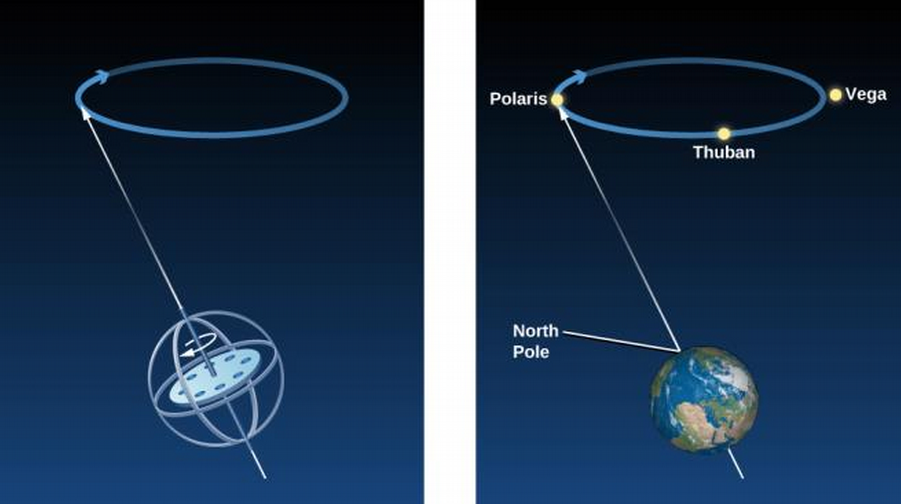
Ptolemy's Model of the Solar System
- Ptolemy of Alexandria wrote Almagest (Arabic, "The Greatest"), a compilation of astronomical knowledge.
- Ptolemy gave a geometric representation predicting positions of planets for any date and time, using Hipparchus' and his own data.
- This is an astonishing feat for many reasons, including accounting for the fact that the Earth is moving itself! How does this complicate things..?
Retrograde motion of Mars
- The Earth travels faster than Mars, so we observe the planet moving Eastward, then go back a little, then go Eastward again—this temporary apparent reverse motion is termed retrograde motion. Imagine trying to describe the movements of the planets not knowing that the Earth was revolving around the Sun, like Ptolemy did! Another limitation is that Greeks believed that celestial movements were all circles (not ovals).
- He solves the latter problem using epicycles; smaller cycles around the original cycle, termed the deferent, which in turn rotated around the Equant point, which is some distance from the Earth.
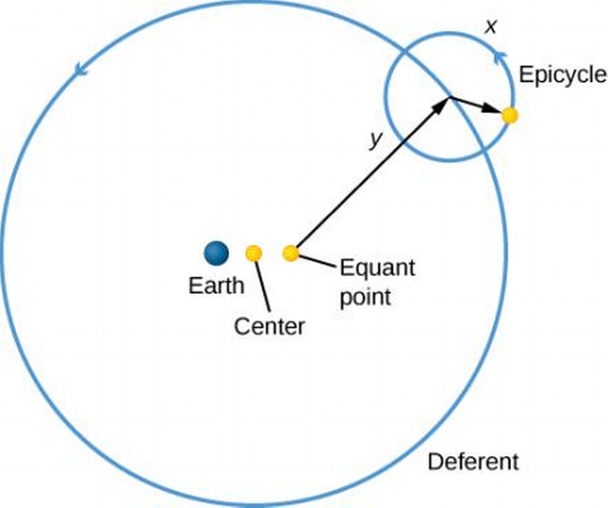
Astrology and Astronomy
The Beginnings of Astrology
- Ptolemy compiled the Tetrabiblos, which remains the "bible" of Astrology.
The Horoscope
- Horoscope means "time marker" (as in marking the time).
- 12 sun signs, each taking 30o of the sky, assigned based on birth time in natal astrology.
- Recall the precession of the Earth, with a 26,000 year cycle? Signs of Greek times have shifted–how much?
- Yes, 1 sign (30o). Astrological signs are therefore out of step, keeping with the old signs.
- Your actual sun sign (which sign the sun covered when you were born) is one sign before the one listed for your birthday.
Astrology today
- No current scientific basis for modern Astrology.
The Birth of Modern Astronomy
Copernicus
- 16th century Polish cleric, contributed heliocentric model, in De Revolutionibus Orbium Coelestium (On the Revolution of Celestial Orbs).
- Ideas not accepted for over a century. "We would feel it if the Earth were moving", "Solid objects would be ripped from the surface", etc. We don't feel velocity, only acceleration (if a train moves at the same speed, we think we are stationary).
The Heliocentric Model
- Copernicus' model didn't need epicycles, was much more elegant.
- Described six (then-known) planets, including Earth, revolving around the Sun, in the correct relative order, deduced that the orbital speed is greater for planets closer to the sun.
- Ptolemy's model with some adjustments could also account for the movement of the planets, albeit not with such elegance.
- Inattention to the scientific method saw no experiments to find the correct model for at around half a century.
- With a new scientific theory, we (1) check for consistency with existing data, then (2) find a difference between the two theories. In the case of Copernicus' theory, it was indeed consistent with existing data. One observable difference in the two theories is that in Copernicus' Venus should exhibit all phases, like the moon, except when the sun came between the Earth and Venus.
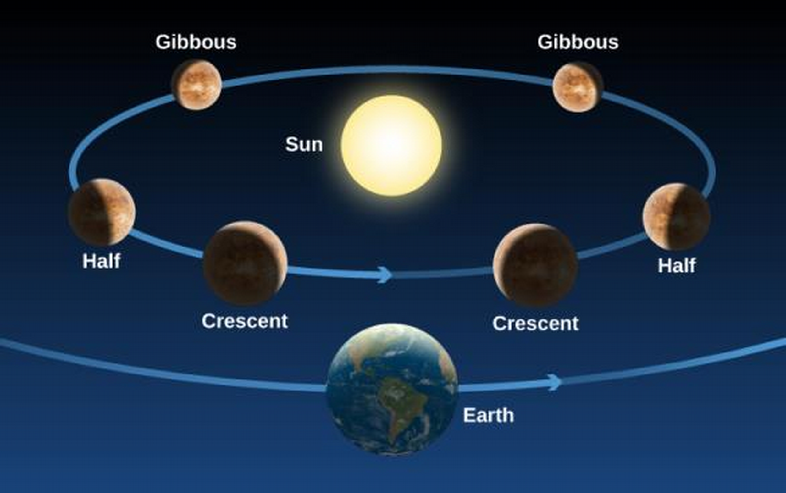
Galileo and the Beginning of Modern Science
- Galileo Galilei, contemporary of Shakespeare, born in Pisa. Posited that while objects at rest tend to stay at rest (as was known), objects in motion tend to stay in motion as well (why is this unintuitive to us?).
- Also found that objects accelerate uniformly (why is this unintuitive?).
- Galileo held that the heliocentric model is correct.
Galileo's Astronomical Observations
- Telescopes predate Galileo, but he designed his own with 3x magnification without having seen one, and then one in 1609 with 9x magnification, which he presented to the Venice city-state. He then created a telescope of 30x magnification to observe the sky (which was not a common use of the telescope at the time).
- Telescopes helped him find some stars too dim for the naked eye, and that some bright spots thought to be stars were actually composed of multiple stars.
- He found evidence for the heliocentric model in observing that Jupiter had four moons itself, dispelling the argument that in a heliocentric model, the Moon would be left behind by the Earth in its orbit. It was now clear that not everything need revolve around the Earth.
- He also found landmarks on the moon resembling Earth's, inviting the notion that the Earth, like the Moon, is a celestial body.
- He was also able to carry out the test of the phases of Venus, disproving Ptolemy's model in favor of Copernicus'.
Ch 3 - Orbits and Gravity
The Laws of Planetary Motion
Tycho Brahe's Observatory
- Tycho Brahe recorded positions of the planets, Sun and Moon for 20 years under the patronage of Danish king Frederick II, finding variances from Ptolemy's work. He found Johannes Kepler in Prague.
Johannes Kepler
- Brahe's pupil, analyzed Brahe's data to develop Kepler's three laws governing planetary motion.
The First Two Laws of Planetary Motion
- Kepler found the orbit, or path, of planets to be ellipses, not circles.
- Whereas a circle is defined by the position of its center and its radius, the ellipse is defined by two points called foci. An ellipse consists of all points such that the distances to the two foci add to the same distance. The ellipse looks like a "stretched" circle, so that its diameter varies with the angle. The largest diameter is called the major axis, and half this distance is referred to as the semimajor axis (akin to the radius).
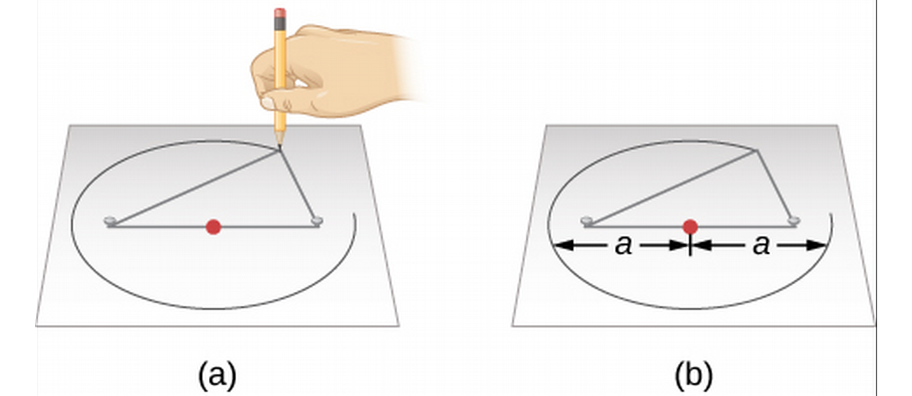
- The shape of the ellipse is described by its eccentricity, which is the ratio of the distance between foci to the length of the major axis. The eccentricity varies from 0 (a circle) to 1 (a completely flattened circle).
- An ellipse can be described entirely by its semimajor axis and its eccentricity.
- Kepler found Mars to have an elliptical orbit; this was revolutionary, as it was previously believed planets move in circular orbits.
Kepler's three laws
- Kepler's First Law: Planetary orbits are elliptical, with the sun as one focus.
- Kepler's Second Law: A planet's orbit is such that the line connecting the planet and the sun traces out equal areas in equal time interval
- Kepler's Third Law: A planet's orbital period \(P\) is related to the semimajor axis \(a\) through the relation, \(P^2 \propto a^{3}\), with the proportionality becoming an equality if P is in years and a in AU.
Kepler's Second Law
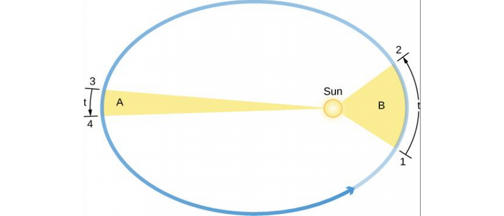
Newton's Great Synthesis
- Sir Isaac Newton was born in the year after Galileo died in England.
- He developed his own Mathematics to further his own research. Can you imagine? He published his results in Philosophiae Naturalis Principia Mathematica under the peer pressure of his friend Edmund Halley, who funded the publishing. The Principia begins by introducing Newton's Laws of Motion.
Newton's Laws of Motion
- Newton's First Law: An object at rest tends to stay at rest, an object in motion tends to stay in motion. This means, without an external force, a moving object will continue moving at its speed, and a stationary object will stay stationary.
- Newton's Second Law: The change in speed of an object (its acceleration, a) is proportional to the force acting on it.
- Newton's Third Law: For every action there is an equal and opposite reaction.
Interpretation of Newton's Laws
- Newton's First Law, also known as the law of inertia, is a restatement of conservation of momentum as discovered by Galileo. Momentum, the product of mass and velocity, is a measure of how difficult it is to stop or move an object. The direction of an object also plays into the momentum.
- Newton's First Law and friction.
- Newton's Third Law and a falling object.
Mass, Volume, and Density
- Mass is the measure of the amount of material in an object.
- Volume is a measure of how much space an object occupies.
- Density is the ratio of mass per unit volume.
Angular Momentum
- Angular Momentum is like momentum, but with spinning; it's a measure of how difficult it is to stop something from spinning, and is the product of the mass, velocity, and distance to the axis of revolution. Like momentum, angular momentum is conserved—this validates Kepler's third law.
Newton's Universal Law of Gravitation
- Newton's First Law suggests that a straight line is the natural path of an object under no external forces, but Kepler found planets to go in elliptical orbits. What force accounts for this? Gravity.
- Newton extended his theory of gravity to all objects, including celestial bodies.
Newton's Law of Gravitation:
\[F_{gravity}=\frac{GM_{1}M_{2}}{R^2}.\]
- Fgravity is the force of gravity between two objects of mass M1 and M2 separated by a distance R. G is the universal gravitational constant, \(G=6.674\times10^{-11}m^{3}kg^{-1}s^{-2}\).
- This universal law governs all celestial bodies and their motions, such as that of the Moon around the Earth, the Earth around the Sun, etc. The \(1/R^2\) dependence means gravity acts in all space, but gets much weaker the farther away you go.
Orbital Motion and Mass
- Newton's formulation completes Kepler's third law to be \(a^3=(M_1+M_2)P^2\). That means we can deduce the mass of celestial bodies based on astronomical observations!
Orbits in the Solar System
- The orbit perihelion is where the planet is closest to the sun (and its motion fastest, by Kepler's Third Law). The opposite of the perihelion is the aphelion, where the orbiting object is farthest from the sun along its orbit.
- For the Earth, a celestial object closest and farthest from the Earth is at its perigee and apogee, respectively.
- A moon is a natural object orbiting a planet, and a satellite is a human-made object orbiting a planet.
Orbits of the Planets
- The periods, semimajor axis, and eccentricity of the orbits of the eight known planets is in Table 3.2. Note Ceres, the largest asteroid now considered a dwarf planet, is included in this list.
- With the exceptions of dwarf planet Pluto (inclined 17o) and dwarf planet Eris (44o), the planets' orbits are within 10o of the Earth's plane of rotation around the Sun (along the ecliptic).
Orbits of Asteroids and Comets
- Asteroids and Comets and heliocentric objects believed to be small chunks of material left over from the formation process of the solar system.
- The majority of asteroids lie between 2.2 and 3.3 AU in the asteroid belt. The largest asteroid therein is Ceres, now considered a dwarf planet.
- The Kuiper Belt lies beyond the planets.
- The Oort Cloud (consisting of icy bodies) lies 1000 times farther.
- Comets are further out than asteroids.

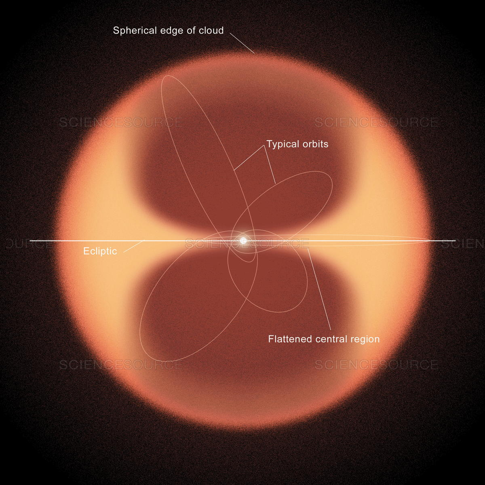
Motions of Satellites and Spacecraft
- The first satellite, Sputnik, was launched by the Soviet Union in 1957. There are now a myriad of international satellites orbiting the Earth.
- Satellites take advantage of the same gravitational principles that give planets and moons their orbits, but getting them in orbit is a lot more work.

Interplanetary Spacecraft
- Escape velocity is the speed required to escape the gravitational pull of a celestial body.
- A gravity assist is when a spacecraft or other object uses the gravitational pull of a planet to slingshot itself to a second target.
Gravity with More than Two Bodies
- So far we've considered each planet as revolving solely around the Sun. But planets have a gravitational effect on each other as well.
- Some can be ignored because of their weaker forces—for example, we can ignore stars other than the sun when examining the motion of the planets of the solar system.
The Discovery of Neptune
- Uranus has been observed as early as 128 BC, but was so dim it was thought to be a star. Sir William Herschel observed it to be a comet, and this was corrected by other astronomers to a planet.
- Uranus' orbit was calculated using Newtonian gravitational principles, but it was observed to diverge by a barely noticeable .03°–which is outside of error.
- John Couch Adams, 1843, predicted a new planet based on the deviation from the trajectory.